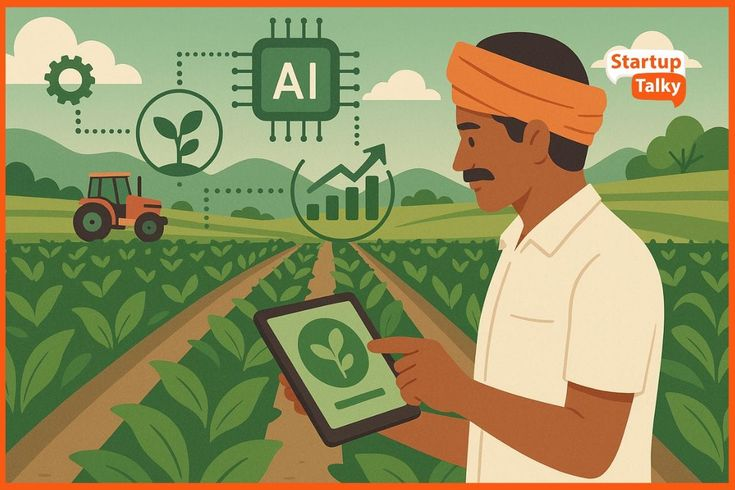
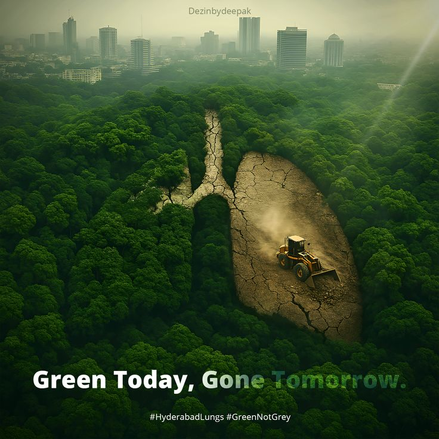

Harness the power of machine learning for smarter crop decisions, instant disease detection, and precision farming guidance.
SmartFarm combines AI, real-time data, and agricultural science to deliver actionable insights for every stage of your farming journey.
AI-powered crop predictions based on soil nutrients, weather conditions, and regional data.
Upload a leaf photo and instantly identify plant diseases using deep learning models.
Real-time weather insights on temperature, humidity, and rainfall for precision planning.
Get optimal fertilizer recommendations tailored to your soil type and crop selection.
Access our AI-powered services directly — click any tool below to launch it.
Plan your farming with precision! Check real-time weather insights on temperature, humidity, and more. Integrated with our crop-prediction model for optimal decisions.
Check Weather
Harness the power of data analysis to predict crop suitability, providing insights into optimal cultivation conditions. SmartFarm optimizes farming decisions based on soil quality, weather, and more.
Try Crop PlannerAssist farmers in detecting plant diseases by enabling image uploads, utilizing deep learning for prompt and precise identification, enhancing farming efficiency and crop management.
Detect DiseaseGet step-by-step crop growing plans, expert planting tips, growth tracking, watering reminders, pest control advice, and harvest timing — all in one place.
Open Guide
Smart crop tech, precision farming, and customizable solutions for sustainable and efficient agriculture. The future of farming starts here.
Learn MoreDesigned for farmers of all technological backgrounds. Simple inputs like location and crop selection give you detailed crop suitability and planting schedules instantly.
Explore App